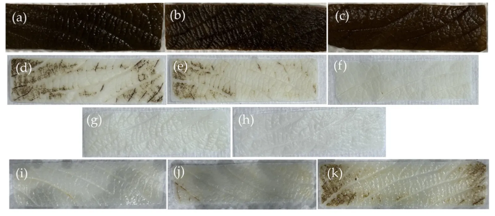
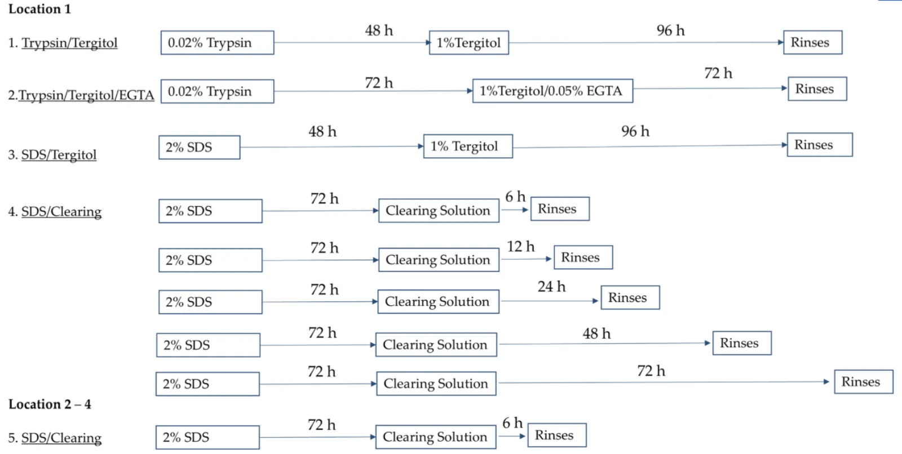

Optimization and Standardization of Plant-Derived Vascular Scaffolds
International Journal of Molecular Sciences, 26(6):2752, 2025
Abstract
Vascular graft failure rates remain unacceptably high due to thrombosis and poor integration, necessitating innovative solutions. This study optimized plant-derived extracellular matrix scaffolds as a scalable and biocompatible alternative to synthetic grafts and autologous vessels. We refined decellularization protocols to achieve >95% DNA removal while preserving mechanical properties comparable to native vessels, significantly enhancing endothelial cell seeding.
Leatherleaf viburnum leaves were decellularized using sodium dodecyl sulfate-based and Trypsin/Tergitol- based treatments, achieved via clearing in bleach and Triton X-100 for 6 to 72 h. To assess the environmental influence on scaffold performance, leaves from multiple collection sites were processed using sodium dodecyl sulfate-based protocols. Scaffold performance was evaluated through tensile testing and histological analysis to assess structural integrity, while DNA quantification and endothelial cell recellularization measured biological compatibility.
Sodium dodecyl sulfate-treated scaffolds with shorter clearing durations demonstrated the highest DNA removal (>=95%) while preserving mechanical properties, significantly outperforming Trypsin/Tergitol treatments. Longer clearing times reduced fiber diameter by 60%, compromising scaffold strength. Shorter clearing times preserved extracellular matrix integrity and significantly improved endothelial cell seeding efficiency. Larger leaves supported significantly higher endothelial cell densities than smaller leaves, highlighting the need for standardized material sources. Permeability tests demonstrated minimal leakage at 120 mmHg and structural stability under dynamic flow conditions, suggesting their suitability for vascular applications. These findings establish a reliable framework for optimizing plant-derived grafts, improving their reproducibility and performance for tissue engineering applications.

